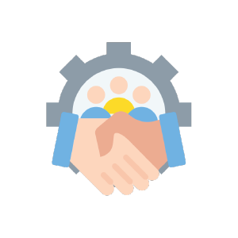

Work Experience
Studied Graphic Design
In college, I learned graphic design and now I mess around with Illustrator and Photoshop in my free time. I love making art, interior design, and now explore UI/UX.
Placeholder
Decade of Acc Management
With experience in both traditional and digital marketing, I've handled accounts across industries like FMCG, banking, telco, automotive, and more.
New to Code
Curious about coding from digital campaigns, I recently tackled a new challenge on my break. It's been a blast, learning something new every day.
Software Proficiency Skills
Graphic Design Tools:
UI/UX Design Tools:
Digital Marketing Tools:
Coding Tools:
Programming Languages and Frameworks
Skills
I've always loved art, incorporating it into my daily life through personal projects and adding artistic touches to my surroundings.
Transitioning from traditional to digital marketing and now embracing coding has taught me the value of staying open to new opportunities.
I strive to effectively manage accounts and collaborate with clients across various industries, always seeking clarity and understanding.
I enjoy finding creative solutions to challenges in graphic design, marketing, and coding, seeing each obstacle as a chance to learn and grow.
Balancing multiple projects, I've learned to prioritize tasks and maximize productivity without compromising quality.
I take pride in ensuring precision and quality in my work, whether designing graphics or writing code, by paying close attention to every detail.
✨Also keeping it 🧊🧊 under pressure✨